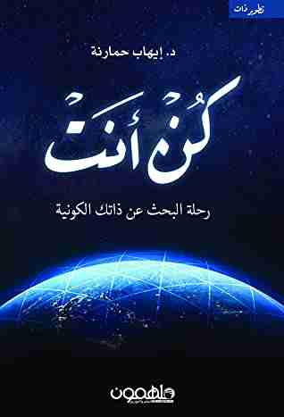

كتاب كن انت

كتاب "كن أنت الذي" للمؤلف إيهاب حمارنة هو دليل عملي وملهم للأشخاص الذين يسعون إلى تحقيق أهدافهم وتحقيق النجاح في الحياة. يركز الكتاب على تطوير الذات وتحفيز القارئ على اتخاذ خطوات جريئة لتحقيق أحلامه.
يتناول الكتاب موضوعات متنوعة تشمل تحديد الأهداف وتخطيطها وتنفيذها، وتحويل العقبات إلى فرص، وتحسين العلاقات الشخصية والاجتماعية، وتحسين الذات والتعلم المستمر.
يقدم الكتاب نصائح عملية وحقائق ملهمة مدعومة بأمثلة وقصص نجاح حقيقية لأشخاص من مختلف الجنسيات والخلفيات. ويدعو الكتاب القارئ إلى الاستثمار في نفسه وتطوير قدراته ومهاراته، والعمل بجد لتحقيق أحلامه.
باختصار، يعتبر كتاب "كن أنت الذي" دليلًا عمليًا لتحسين الذات وتحقيق النجاح وتحقيق الأهداف، وينصح به لأي شخص يسعى لتحسين حياته وتحقيق أحلامه.